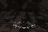

Tarântula
- NovoFoi adicionada uma carta que invoca uma tarântula gigante. Ela sai de uma toca onde você mira e caça seus inimigos pelo chão, pelas paredes e pelo teto por 60 s.
- NovoEla dá o bote de longe, pulando pelo ar, e a mordida envenena.
- NovoApertando a tecla da carta de novo, ela fica te protegendo.